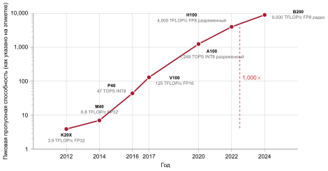

Содержание главы
Содержание
- 17 Системные допущения
- Как пользоваться этим приложением
- 17.1 Соглашения о единицах
- 17.2 Характеристики ускорителей
- 17.2.1 Главная матрица ускорителей
- 17.2.2 NVIDIA H100 (эталонная машина)
- 17.2.3 NVIDIA V100
- 17.2.4 NVIDIA T4
- 17.2.5 NVIDIA A100
- 17.2.6 NVIDIA B200
- 17.2.7 AMD Instinct MI300X
- 17.2.8 Google TPU v4, v5p и v6e
- 17.2.9 CPU и мобильные/периферийные процессоры
- 17.2.10 Поддержка точности по поколениям
- 17.2.11 Заявленная пиковая пропускная способность по поколениям
- 17.2.12 Рабочий лист стоимости ускорителей
- 17.3 Спецификации моделей
- 17.4 Соглашения о памяти для обучения
- 17.5 Константы энергопотребления
- 17.6 Пропускная способность интерконнектов и сети
- 17.7 Экономические константы
- 17.8 Масштабные ориентиры
- 17.9 Расчётные примеры
- 17.10 Происхождение допущений
- 17.11 Итоги
17 Системные допущения
Расчёт «на салфетке» надёжен настолько, насколько надёжны стоящие за ним входные данные, а эти данные легко потерять из виду: пиковая производительность ускорителя, число параметров модели, цена электричества, стоимость энергии на одну операцию. Это приложение собирает канонические значения и зависящие от них соглашения о единицах в единый справочный лист, чтобы читатель мог проверить оценку или подставить более свежее число. Главы могут затем рассуждать от чисел, не повторяя каждый раз, откуда они взяты.
Как пользоваться этим приложением
Каждое значение здесь датировано: оно относится к конкретному продукту, модели или цене и меняется с выходом следующего поколения. Отношения и порядки величин — например, разрыв в энергии между обращением к DRAM и арифметической операцией — живут гораздо дольше, и Числа, которые стоит знать собирает их. NVIDIA H100 — референсная машина книги, поэтому примеры обучения и обслуживания подставляют значения из Глава 17.2.2, если глава явно не называет другое устройство. Таблица 1 сопоставляет каждую потребность с разделом, где лежат значения. Глава 17.10 фиксирует происхождение каждого значения, так что читатель может подставить актуальное или локальное значение и повторить оценку, не меняя её метода.
| Потребность | Раздел |
|---|---|
| Преобразовать псевдоним единицы или проверить десятичную приставку | Глава 17.1 |
| Сравнить поколения ускорителей на одной странице | Глава 17.2.1 |
| Подставить пиковые производительности, пропускную способность или точку «крыши» референсной машины | Глава 17.2.2 |
| Найти более старый или альтернативный ускоритель | Глава 17.2 |
| Оценить развёртывание на мобильном устройстве, edge-устройстве или микроконтроллере | Глава 17.2.9 |
| Проверить, какие числовые форматы поддерживает поколение GPU | Глава 17.2.10 |
| Интерпретировать заявленную пиковую пропускную способность | Глава 17.2.11 |
| Перевести прейскурантную цену в цену за единицу пиковой производительности | Глава 17.2.12 |
| Найти «маячковую» рабочую нагрузку и ограничивающий её ресурс | Глава 17.3.1 |
| Найти параметры модели, число операций или масштаб обучения | Глава 17.3.2 |
| Оценить память состояния обучения на параметр | Глава 17.4 |
| Оценить энергию операции или обращения к памяти | Глава 17.5 |
| Сравнить задержку и пропускную способность памяти, линков и накопителей | Глава 17.6.1 |
| Оценить время передачи по PCIe, NVLink, InfiniBand или Ethernet | Глава 17.6.2 |
| Посчитать цену электричества или исходящего трафика данных | Глава 17.7 |
| Опереться на объём продакшн-запросов или скорость потока данных с сенсоров | Глава 17.8 |
| Проследить полную оценку, построенную из этих значений | Глава 17.9 |
| Проследить значение до его источника | Глава 17.10 |
17.1 Соглашения о единицах
Смешение двоичных ёмкостей (1 alias base. Приставки данных — десятичные SI (
Обозначения ёмкости на оборудовании — единственное сознательное исключение. Справочные таблицы сохраняют паспортные числа и обозначения вендоров; байтовые бюджеты, используемые в расчётах, следуют допущениям книги об устройствах. Например, книга моделирует ускоритель на 80 GB как
| Alias | Multiplier | Base unit |
|---|---|---|
byte |
1 | byte |
KB |
1000 | byte |
MB |
1e+06 | byte |
GB |
1e+09 | byte |
TB |
1e+12 | byte |
PB |
1e+15 | byte |
flop |
1 | flop |
GFLOPs |
1e+09 | flop |
TFLOPs |
1e+12 | flop |
ZFLOPs |
1e+21 | flop |
param |
1 | param |
Mparam |
1e+06 | param |
Gbps |
1e+09 | bit/s |
NS |
second | |
US |
second | |
MS |
second | |
second |
1 | second |
hour |
3600 | second |
day |
86400 | second |
joule |
1 | joule |
watt |
1 | watt |
meter |
1 | meter |
17.2 Характеристики ускорителей
Оценка размера обучающего кластера или парка обслуживания требует единого набора потолков на чип, чтобы оценки в разных главах сравнивали рабочую нагрузку, а не плавающие аппаратные базовые линии. Эти допущения об ускорителях задают пиковую пропускную способность, пропускную способность памяти, ёмкость памяти и расчётную тепловую мощность (TDP) для каждого поколения, на которое ссылаются главы. Значения — пиковые показатели из документации вендоров, которые служат потолками для расчётов «на салфетке», а не устойчивой утилизацией. Они взяты из документации NVIDIA и статей IEEE Micro по архитектуре (NVIDIA Corporation 2017 г., 2020 г.b, 2020 г.a, 2021 г., 2018 г., 2024 г.; Choquette и др. 2021 г.; Choquette 2023 г.), документации AMD MI300X (AMD 2023 г.), публикаций Google по Tensor Processing Unit (TPU) (Jouppi и др. 2020 г.; Jouppi и др. 2023 г.) и актуальной страницы спецификаций Google Cloud по TPU v6e (Google Cloud 2026 г.). Строки ёмкости сохраняют обозначенную вендором ёмкость. Главная матрица сравнивает поколения на одной странице, а следующие за ней разделы дают значения по чипам и три датированных сравнения: по поддержке точности, заявленным пикам и цене за единицу пиковой производительности. Границы производительности развивает анализ «крыши» (roofline), превращающий эти значения в режим для заданной рабочей нагрузки.
17.2.1 Главная матрица ускорителей
Рядом друг с другом ускорители, на которые ссылается книга, охватывают более чем порядок величины по пиковой производительности, ёмкости памяти и энергопотреблению, но большинство размещает свою точку «крыши» для FP16 в полосе в несколько сотен FLOP на байт (Таблица 3). Точка «крыши» делит пиковую пропускную способность FP16 на пропускную способность памяти (модель развивается в Модель «крыши» (Roofline)). Рабочая нагрузка, чья арифметическая интенсивность ниже точки «крыши» чипа, ограничена пропускной способностью памяти на этом чипе и не выигрывает ничего от более быстрого тракта данных. Два чипа находятся далеко за пределами этой полосы, на противоположных концах. Первый TPU сочетал тракт данных только с INT8 и память DDR3, что помещает его точку «крыши» высоко над полосой, а кремниевый движок пластинного масштаба хранит веса в SRAM на самой пластине, что помещает его точку «крыши» далеко ниже полосы.
| Accelerator | Year | FP16/BF16 Peak | FP8 or INT8 Peak | Memory | Bandwidth | TDP | Ridge Point ( |
|---|---|---|---|---|---|---|---|
| NVIDIA V100 | 2017 | 125 TFLOP/s | — | 32 GB | 900 GB/s | 300 W | 138.9 FLOP/byte |
| NVIDIA T4 | 2018 | 65 TFLOP/s | 130 TOPS (INT8) | 16 GB | 320 GB/s | 70 W | 203.1 FLOP/byte |
| NVIDIA A100 | 2020 | 312 TFLOP/s | 624 TOPS (INT8) | 80 GB | 2,039 GB/s | 400 W | 153.0 FLOP/byte |
| NVIDIA H100 | 2022 | 989 TFLOP/s | 1,979 TFLOP/s (FP8) | 80 GB | 3,350 GB/s | 700 W | 295.2 FLOP/byte |
| NVIDIA H200 | 2023 | 989 TFLOP/s | 1,979 TFLOP/s (FP8) | 141 GB | 4,800 GB/s | 700 W | 206.0 FLOP/byte |
| NVIDIA B200 | 2024 | 2,250 TFLOP/s | 4,500 TFLOP/s (FP8) | 180 GB | 8,000 GB/s | 1,000 W | 281.2 FLOP/byte |
| AMD Instinct MI300X | 2023 | 1,307 TFLOP/s | 2,614 TFLOP/s (FP8) | 192 GB | 5,300 GB/s | 750 W | 246.6 FLOP/byte |
| Intel Gaudi 2 | 2022 | 432 TFLOP/s | 865 TFLOP/s (FP8) | 96 GB | 2,450 GB/s | 600 W | 176.3 FLOP/byte |
| Intel Gaudi 3 | 2024 | 1,835 TFLOP/s | 1,835 TFLOP/s (FP8) | 128 GB | 3,700 GB/s | 900 W | 495.9 FLOP/byte |
| Google TPU v1 | 2017 | — | 92 TOPS (INT8) | 8 GB | 34 GB/s | 75 W | 2,705.9 FLOP/byte (INT8) |
| Google TPU v2 | 2017 | 46 TFLOP/s | — | 16 GB | 700 GB/s | 280 W | 65.7 FLOP/byte |
| Google TPU v3 | 2018 | 123 TFLOP/s | — | 32 GB | 900 GB/s | 450 W | 136.7 FLOP/byte |
| Google TPU v4 | 2021 | 275 TFLOP/s | — | 32 GB | 1,200 GB/s | 200 W | 229.2 FLOP/byte |
| Google TPU v5p | 2023 | 459 TFLOP/s | 918 TOPS (INT8) | 95 GB | 2,760 GB/s | 300 W | 166.3 FLOP/byte |
| Google TPU v6e | 2024 | 918 TFLOP/s | — | 32 GB | 1,638 GB/s | 300 W | 560.4 FLOP/byte |
| Cerebras WSE-3 | 2024 | 125,000 TFLOP/s | — | 44 GB SRAM | 21 PB/s | 23,000 W | 6.0 FLOP/byte |
17.2.2 NVIDIA H100 (эталонная машина)
NVIDIA H100 — ускоритель по умолчанию для расчётов обучения и обслуживания моделей в этой книге; он задаёт единую базовую линию по пиковым FLOP/s, пропускной способности памяти (HBM) и ёмкости во всех главах. Он сочетает тензорные ядра поколения Hopper с поддержкой FP8 и Transformer Engine с памятью HBM3 (Choquette 2023 г.) (Таблица 4).
| Допущение | Значение |
|---|---|
| Release year | 2022 |
| Peak FP16/BF16 tensor throughput (dense) | 989 TFLOP/s |
| Peak FP16/BF16 tensor throughput (2:4 sparse) | 1,979 TFLOP/s |
| Peak FP8 tensor throughput (dense) | 1,979 TFLOP/s |
| Peak INT8 tensor throughput (dense) | 1,979 TOPS |
| Peak TF32 tensor throughput (dense) | 494.5 TFLOP/s |
| Peak FP32 throughput (CUDA cores) | 67 TFLOP/s |
| HBM3 capacity (nameplate) | 80 GB |
| HBM3 bandwidth | 3.35 TB/s |
| L2 cache | 50 MB |
| Streaming multiprocessors | 132 |
| NVLink 4.0 bandwidth (bidirectional total) | 900 GB/s |
| PCIe Gen5 x16 host link (per direction) | 64 GB/s |
| TDP | 700 W |
| Ridge point, FP16/BF16 | 295.2 FLOP/byte |
| Ridge point, FP8/INT8 | 590.7 FLOP/byte |
| List price (approximate) | ~$25,000–30,000 |
Две точки «крыши» превращают эти значения в классификацию. Ядро (kernel), интенсивность арифметики которого превышает точку «крыши» FP16/BF16, равную 295.2 FLOP/byte, ограничено вычислениями на H100; ядро ниже неё ограничено пропускной способностью и не станет быстрее на более быстром тракте данных. FP8 и INT8 удваивают пиковую скорость при неизменной пропускной способности памяти, поэтому точка «крыши» поднимается до 590.7 FLOP/byte, и слой, который был ограничен вычислениями при FP16, может после квантизации оказаться ниже неё. Конкретный пример: анализ H100 разбирает пример с моделью «крыши» на этих значениях, а Границы производительности развивает режимы.
17.2.3 NVIDIA V100
V100 поколения Volta (Таблица 5) впервые представила тензорные ядра и является ускорителем обучающего запуска GPT-3, который примеры этой книги по стоимости и энергии воспроизводят. Его пропускная способность HBM2 и лимит энергопотребления служат базовой линией раннего поколения, относительно которой измеряются приросты Ampere, Hopper и Blackwell.
| Допущение | Значение | Единица измерения |
|---|---|---|
| Peak FP16 tensor throughput (V100) | 125 | TFLOP/s |
| Peak FP32 throughput (V100) | 15.7 | TFLOP/s |
| HBM bandwidth (V100) | 900 | GB/s |
| HBM capacity (V100) | 32 | GB |
| TDP (V100) | 300 | W |
17.2.4 NVIDIA T4
В сравнениях инференса при низкой потребляемой мощности базовой линией служит T4 поколения Turing (Таблица 6). Поскольку карта укладывается в лимит маломощного слота PCIe без дополнительных разъёмов питания, она служит опорной точкой для сравнений стоимости на запрос и периферийных серверов в главах об обслуживании моделей.
| Допущение | Значение | Единица измерения |
|---|---|---|
| Peak FP16 tensor throughput (T4) | 65 | TFLOP/s |
| Peak INT8 throughput (T4) | 130 | TOPS |
| Memory bandwidth (T4) | 320 | GB/s |
| TDP (T4) | 70 | W |
17.2.5 NVIDIA A100
A100 поколения Ampere (Таблица 7) предшествовала эталонной машине, и её значения используются в датированных сравнениях между поколениями. Она впервые представила тензорные ядра TF32 и BF16 наряду с уровнем ёмкости HBM2e, который H100 сохранила.
| Допущение | Значение | Единица измерения |
|---|---|---|
| Peak FP16 tensor throughput (A100) | 312 | TFLOP/s |
| Peak FP32 throughput (A100) | 19.5 | TFLOP/s |
| Peak INT8 throughput (A100) | 624 | TOPS |
| Peak TF32 throughput (A100) | 156 | TFLOP/s |
| HBM bandwidth (A100) | 2039 | GB/s |
| HBM capacity (A100) | 80 | GB |
| TDP (A100) | 400 | W |
17.2.6 NVIDIA B200
Примеры планирования ёмкости с прицелом на будущее опираются на спецификации поколения Blackwell (Таблица 8). Его пропускная способность HBM3e и нативные скорости тензорных ядер FP4 и FP8 показывают, как ёмкость памяти, пропускная способность и потребляемая мощность продолжают масштабироваться после Hopper.
| Допущение | Значение | Единица измерения |
|---|---|---|
| Peak FP16 tensor throughput (B200) | 2250 | TFLOP/s |
| Peak FP8 tensor throughput (B200) | 4500 | TFLOP/s |
| Peak FP4 throughput (B200) | 9000 | TFLOP/s |
| HBM bandwidth (B200) | 8 | TB/s |
| HBM capacity (B200) | 180 | GB |
| TDP (B200) | 1000 | W |
17.2.7 AMD Instinct MI300X
Характеристики MI300X по ёмкости, пропускной способности, пиковой производительности и энергопотреблению дают межвендорное сравнение с H100, используемой в других местах книги (Таблица 9). Её больший объём памяти HBM3 и пропускная способность памяти показывают, как ускоритель, оптимизированный для обслуживания с ограничением по памяти, сдвигает потолок ёмкости одного устройства.
| Допущение | Значение | Единица измерения |
|---|---|---|
| Peak FP16 tensor throughput (MI300X) | 1307 | TFLOP/s |
| HBM bandwidth (MI300X) | 5.3 | TB/s |
| HBM capacity (MI300X) | 192 | GB |
| TDP (MI300X) | 750 | W |
17.2.8 Google TPU v4, v5p и v6e
При сравнении экономики обучения между семействами ускорителей альтернативой GPU выступают TPU — специализированные интегральные схемы (ASIC) Google (Таблица 10). Каждый чип соединяет свои систолические массивы с памятью HBM и с соседними чипами через межчиповое соединение (Inter-Chip Interconnect, ICI) — аналог NVLink в мире TPU.
| Допущение | TPU v4 | TPU v5p | TPU v6e |
|---|---|---|---|
| Peak BF16 throughput | 275 TFLOP/s | 459 TFLOP/s | 918 TFLOP/s |
| Peak INT8 throughput | — | 918 TOPS | — |
| HBM capacity | 32 GB | 95 GB | 32 GB |
| HBM bandwidth | 1,200 GB/s | 2,760 GB/s | 1,638 GB/s |
| On-chip vector memory (VMEM) | — | 128 MB | — |
| ICI bandwidth | 300 GB/s | 1,200 GB/s | 800 GB/s |
| TDP | 200 W | 300 W | 300 W |
17.2.9 CPU и мобильные/периферийные процессоры
Примеры периферийного (edge) и мобильного машинного обучения опираются на иную базовую точку производительности (Таблица 11), значительно более низкую, чем пропускная способность дата-центров. Строки микроконтроллеров описывают ESP32-S3 — плату, на которой выполняются примеры распознавания ключевых слов из этой книги.
| Допущение | Значение | Единица измерения |
|---|---|---|
| Peak FP32 throughput (reference CPU) | 1 | TFLOP/s |
| DRAM bandwidth (reference server) | 50 | GB/s |
| Reference NPU throughput (iPhone 15 Pro) | 35 | TOPS |
| Memory bandwidth (iPhone 15 Pro) | 51.2 | GB/s |
| TDP (mobile device, reference) | 5 | W |
| Power (edge object detector, reference) | 2 | W |
| Battery capacity (phone, reference) | 15 | Wh |
| On-chip SRAM (microcontroller, ESP32-S3) | 520 | KiB |
| TDP (microcontroller, ESP32-S3) | 0.4 | W |
17.2.10 Поддержка точности по поколениям
Поддержка форматов Tensor Core расширялась с каждым поколением NVIDIA от Volta до Ampere (Таблица 12). Volta поддерживала немногим больше FP16. Ampere представила TF32, сочетающий диапазон экспоненты FP32 с шириной мантиссы FP16 (NVIDIA 2020 г.), наряду с более широкой поддержкой BF16, INT8 и INT4 (NVIDIA Corporation 2017 г., 2018 г., 2020 г.a). Последующие поколения сужают набор форматов ещё сильнее: FP8 в Hopper и FP4 в Blackwell (Таблица 4; Таблица 8). В Компромиссы точности объясняется, почему каждый более узкий формат повышает пиковую пропускную способность на том же кремнии.
| Architecture | Year | Tensor Core Formats | CUDA Core Formats |
|---|---|---|---|
| Volta | 2017 | FP16 | FP64, FP32, FP16 |
| Turing | 2018 | FP16, INT8, INT4, INT1 | FP64, FP32, FP16, INT8 |
| Ampere | 2020 | FP64, TF32, BF16, FP16, INT8, INT4 | FP64, FP32, FP16, BF16, INT8 |
17.2.11 Заявленная пиковая пропускная способность по поколениям
Заявленная пиковая пропускная способность одночиповых GPU выросла более чем на три порядка между поколениями, показанными на Рисунок 1, где архитектурное масштабирование сочетается с более низкими числовыми точностями и структурной разреженностью (NVIDIA Corporation 2017 г., 2020 г.a, 2024 г.; Choquette 2023 г.). Поскольку точки смешивают форматы точности, объединяют FLOP/s с операциями INT8 в секунду и предполагают структурную разреженность для A100, H100 и B200, они не измеряют одну согласованную величину. Вместо этого кривая сравнивает наиболее заметный заявленный путь каждого поколения, а не производительность приложений при одинаковой точности. В Таблица 3 приведены плотные пиковые значения тех же чипов с привязкой к точности, а также их пропускная способность и лимиты энергопотребления.

17.2.12 Рабочий лист стоимости ускорителей
Деление цены приобретения ускорителя на его заявленную пиковую пропускную способность даёт быструю базовую метку «цена за TFLOP/s», но сравнение этого отношения между поколениями вводит в заблуждение, когда пиковые значения используют разные режимы точности или когда пропускная способность памяти ограничивает исполнение раньше, чем вычисления (Таблица 13). Рекомендованные розничные цены также различаются по вендору, региону, условиям контракта и объёму закупки, а строки пропускной способности в рабочем листе используют разные режимы числовой точности. Поэтому полученное отношение «цена за пиковую операцию» осмысленно внутри одной строки — где оно показывает, как допущение о цене входит в арифметику, — а не как межустройственный рейтинг. В Анализ стоимости и производительности сформулировано устойчивое правило, которое поддерживает этот рабочий лист: делить стоимость на пропускную способность, которую рабочая нагрузка доставляет на своём ограничивающем ресурсе, а не на заявленный пик.
| Ускоритель | Розничная цена | Репрезентативный пик (указана точность) | Пропускная способность памяти | Цена за пиковый TFLOP/s |
|---|---|---|---|---|
| NVIDIA V100 | ~$10,000 | 125 TFLOP/s (FP16) | 900 GB/s | $80/(TFLOP/s) |
| NVIDIA A100 | ~$15,000 | 312 TFLOP/s (FP16) | 2,039 GB/s | $48.1/(TFLOP/s) |
| NVIDIA H100 | ~$25,000–30,000 | 494.5 TFLOP/s (TF32) | 3,350 GB/s | ~$50.6/(TFLOP/s) |
17.3 Спецификации моделей
Аппаратные потолки становятся узкими местами лишь в связке с числом параметров, операционным бюджетом и занимаемым объёмом памяти рабочей нагрузки: один и тот же H100, ограниченный вычислениями на тренировочном шаге ResNet-50 по 256 изображениям, оказывается ограниченным пропускной способностью памяти при декодировании языковой модели по одной последовательности и ограниченным объёмом памяти на таблице рекомендаций в 100 GB. Сопоставление сквозных моделей книги с аппаратными базовыми показателями из Глава 17.2 фиксирует как операционный режим каждой маяковой нагрузки, так и число параметров, FLOPs инференса и якоря масштаба обучения, которые главы подставляют в свои оценки.
17.3.1 Маяковые нагрузки
Через всю книгу проходят пять маяковых нагрузок, каждая из которых вводится в том режиме, который она типизирует (Маяковые модели вводят «железный закон» в практику; Архетипы рабочих нагрузок). Режим принадлежит нагрузке на конкретной машине, а не имени модели. Поэтому каждая строка Таблица 14 ключуется моделью, фазой и батчем, причём во второй строке GPT-2 XL зафиксирован выход из «домашнего» режима модели. По этим строкам встречаются четыре режима. Нагрузки, ограниченные вычислениями и пропускной способностью памяти, разделяются гребневой точкой модели «крыши». Нагрузки, ограниченные объёмом памяти и энергопотреблением, упираются в ограничение до того, как вступает в силу любой из временных членов, поскольку рабочий набор должен помещаться в памяти, а энергетический бюджет — покрывать выполнение. Для строк, ограниченных вычислениями и пропускной способностью памяти, последний столбец сопоставляет время, которое шаг тратит на арифметику при пиковой пропускной способности FP16, со временем чтения весов один раз при пиковой пропускной способности HBM на одном H100. Какое из этих времён больше — тот режим и назван. Пятый режим, ограниченный накладными расходами, возникает, когда доминирует фиксированный член задержки «железного закона», и он принадлежит решению о развёртывании, такому как обслуживание с батчем размера один, а не маяковой нагрузке (Кейс 2: Обрыв по задержке (межосевой)).
| Маяковая нагрузка | Фаза | Батч | Машина | Режим | Ограничивающий ресурс | Что задаёт режим |
|---|---|---|---|---|---|---|
| ResNet-50 | Обучение | 256 изображений | H100 | Ограничена вычислениями | Пропускная способность тензорных операций | 6.4 ms арифметики против 15.3 μs чтения весов на шаг |
| MobileNetV2 | Инференс | 1 изображение | Phone NPU | Ограничена вычислениями (эффективный режим) | Арифметика в пределах энергетического лимита телефона | 17.1 μs арифметики при пиковых 35 TOPS NPU, внутри лимита устройства 5 W |
| GPT-2 XL | Декодирование | 1 последовательность | H100 | Ограничена пропускной способностью памяти | Пропускная способность HBM | 3.0 μs арифметики против 0.90 ms чтения весов на токен |
| GPT-2 XL | Обучение | 32 последовательностей по 1,024 токенов | H100 | Ограничена вычислениями (переход) | Пропускная способность тензорных операций | 298.2 ms арифметики против 0.90 ms чтения весов на шаг |
| Llama 3 8B | Декодирование, контекст 8,192 токенов | 1 последовательность | H100 | Ограничена пропускной способностью памяти | Пропускная способность HBM и объём KV-кэша | 5.1 ms чтения 16.1 GB весов и 1.07 GB KV-кэша против 16.2 μs арифметики на токен |
| DLRM | Инференс | Любой | H100 | Ограничена объёмом памяти | Объём памяти | 100 GB таблиц эмбеддингов против 80 GB HBM |
| KWS (DS-CNN) | Инференс | 1 аудиоокно | ESP32-S3 | Ограничена энергопотреблением | Энергия на инференс | 200 KB INT8-модель в 520 KB SRAM, на плате с потреблением от 50 mW до 1.2 W |
Та же модель меняет режим при смене фазы или батча. GPT-2 XL прогоняет все веса, чтобы выдать один токен декодирования, но тренировочный шаг амортизирует одно чтение весов на десятки тысяч токенов и становится ограниченным арифметикой. KV-кэш Llama 3 8B добавляет байты к каждому шагу декодирования по мере роста контекста. Границы производительности размещает эти нагрузки на «крыше» H100, Авторегрессионное декодирование оценивает размер KV-кэша, из-за которого декодирование ограничено пропускной способностью памяти, а Память и KV-кэш вписывает этот кэш в ёмкость при обслуживании.
17.3.2 Спецификации референсных моделей
Число параметров, бюджеты FLOPs на инференс и опубликованные якоря масштаба обучения образуют допущения о референсных моделях, стоящие за примерами стоимости обучения, занимаемого объёма памяти и нагрузки при инференсе (Таблица 15). Опубликованные размеры моделей следуют первичным статьям, отчётам о моделях и официальной документации (Devlin и др. 2019 г.; Radford и др. 2019 г.; Brown и др. 2020 г.; Dubey и др. 2024 г.; He и др. 2016 г.; Sandler и др. 2018 г.; Ultralytics 2023 г.; Naumov и др. 2019 г.; Banbury и др. 2021 г.). Бюджеты же FLOPs инференса выведены в книге: длина последовательности 128 для BERT-Base, изображения
| Допущение | Значение | Единица |
|---|---|---|
| FLOPs инференса (BERT-Base) | 2.2e+10 | flop |
| Параметры (BERT-Base) | 1.1e+08 | param |
| Параметры (Llama 3 8B) | 8.03e+09 | param |
| Скрытая размерность (GPT-2 XL) | 1600 | - |
| Слои (GPT-2 XL) | 48 | - |
| Параметры (GPT-2 XL) | 1.5e+09 | param |
| Параметры (GPT-3) | 1.75e+11 | param |
| Референсная длительность обучения (GPT-3) | 14.8 | d |
| Референсные ускорители обучения (GPT-3) | 10,000 | V100 GPUs |
| Референсные FLOPs обучения (GPT-3) | 3.14e+23 | flop |
| Параметры (GPT-4, публичная оценка MoE) | 1.76e+12 | param |
| Референсные GPU-дни обучения (GPT-4) | 2.5e+06 | GPU-days |
| FLOPs инференса (ResNet-50) | 8.2e+09 | flop |
| Параметры (ResNet-50) | 2.5557e+07 | param |
| FLOPs инференса (MobileNetV2) | 6e+08 | flop |
| Параметры (MobileNetV2) | 3.50487e+06 | param |
| FLOPs инференса (YOLOv8-Nano) | 8.7e+09 | flop |
| Размер таблицы эмбеддингов (DLRM, референс) | 100 | GB |
| Значения эмбеддингов (DLRM, референс) | 2.5e+10 | embedding values |
| Параметры (KWS DS-CNN) | 200000 | param |
| FLOPs инференса (KWS DS-CNN) | 2e+07 | flop |
17.4 Соглашения о памяти для обучения
Умножение числа параметров модели на 2 байта даёт размер весов BF16 для инференса, но полный цикл обучения должен дополнительно разместить в памяти ускорителя градиенты, главную копию весов в FP32 и состояние оптимизатора до того, как будет выделен хоть один байт под активации. Поэтому прикидки памяти для обучения по всей книге используют модель хранения смешанной точности адаптивной оценки моментов (Adam): веса BF16, градиенты BF16 и главные веса FP32 плюс буферы первого и второго моментов Adam (всего 16 байт на параметр). Это соглашение книги, а не измеренная аппаратная константа. Тракт данных BF16 опирается на стандартное обучение в смешанной точности BF16 (Kalamkar и др. 2019 г.), главная копия весов в FP32 следует более ранним работам по FP16 (Micikevicius и др. 2018 г.; NVIDIA 2017 г.), а буферы первого и второго моментов Adam — (Kingma и Ba 2015 г.). Умножение байт на параметр на число параметров даёт занимаемый объём памяти состояния обучения без активаций, а Таблица 16 перечисляет размеры байтовых полей по компонентам. Память обучения выводит каждый компонент и добавляющуюся к нему память активаций, а Оптимизаторы и их память применяет это соглашение к циклам обучения в книге.
| Допущение | Значение | Единица |
|---|---|---|
| Разрядность весов/градиентов (BF16) | 2 | bytes |
| Разрядность главных весов (FP32) | 4 | bytes |
| Главные веса + состояния Adam на параметр (FP32) | 12 | bytes |
| Байт на параметр (Adam в смешанной точности) | 16 | bytes |
17.5 Константы энергопотребления
Пиковая пропускная способность и разрядности определяют, насколько быстро чип может работать и сколько состояния он способен хранить, тогда как энергетические допущения определяют, является ли это исполнение термически и экономически жизнеспособным на уровне отдельных операций и обращений к памяти. Арифметические оценки Хоровица для 45 нм и 32-битной DRAM (Horowitz 2014 г.) вместе с иллюстративными якорями книги для обращения к регистрам и SRAM, инференса MobileNetV2 и передачи по 5G лежат в основе сравнений эффективности в книге, но не являются независимыми от техпроцесса. Энергия обращения растёт от регистров к DRAM, а энергия сложения и умножения падает с уменьшением разрядности операндов (Таблица 17). Иерархия обращений количественно объясняет, почему повторное использование данных доминирует при проектировании ядер, а Иерархия памяти излагает стоящую за этим физику в виде соотношений, которые сохраняются между техпроцессами.
| Допущение | Значение | Единица |
|---|---|---|
| Энергия обращения к регистру | 0.1 | pJ |
| Энергия обращения к L1 SRAM | 0.5 | pJ |
| Энергия обращения к L2 SRAM | 2 | pJ |
| Энергия обращения к DRAM (32 бита) | 640 | pJ |
| Энергия обращения к DRAM (на байт) | 160 | pJ/byte |
| Энергия сложения FP32 (45 нм) | 0.9 | pJ/add |
| Энергия сложения FP16 (45 нм) | 0.4 | pJ/add |
| Энергия сложения INT32 (45 нм) | 0.1 | pJ/add |
| Энергия сложения INT8 (45 нм) | 0.03 | pJ/add |
| Энергия умножения FP32 (45 нм) | 3.7 | pJ/multiply |
| Энергия умножения FP16 (45 нм) | 1.1 | pJ/multiply |
| Энергия умножения INT8 (45 нм) | 0.2 | pJ/multiply |
| Энергия инференса MobileNetV2 (эталон) | 0.1 | mJ |
| Энергия передачи по 5G на МБ | 100 | mJ/MB |
Строки арифметики несут два порядка, которые выполняются на любом техпроцессе. Умножение стоит в несколько раз дороже сложения при той же разрядности, потому что площадь умножителя растёт примерно как квадрат разрядности операнда
17.6 Пропускная способность интерконнектов и сети
Энергетические затраты действуют на уровне чипа, но реальные ML-системы также перемещают данные через интерконнекты, между ускорителями, по стойкам и через глобальные сети. Эти допущения о пропускной способности применяются, когда главы рассуждают о синхронизации градиентов, простоях конвейера, вводе-выводе контрольных точек или задержке между дата-центами, охватывая как поуровневую иерархию внутри одного узла H100, так и семейства линков, соединяющих ускорители, хосты и стойки.
17.6.1 Задержка и пропускная способность по уровням
Задержка обращения возрастает на пять порядков от регистра до чтения с NVMe, тогда как пропускная способность падает от терабайт в секунду на HBM до единиц гигабайт в секунду на локальном хранилище (Таблица 18). Иерархия задержек выражает те же уровни в виде порядков и кратных одному обращению к регистру, которые меняются медленнее, чем значения здесь.
| Уровень | Технология | Задержка | Пропускная способность |
|---|---|---|---|
| Регистры | Триггеры | 0.3 ns | — |
| Кэш L1 | SRAM | 1 ns | — |
| Кэш L2 | SRAM | 4 ns | — |
| Память ускорителя | HBM3 (H100) | 273 ns | 3,350 GB/s |
| Линк ускорителя | NVLink 4.0 (H100) | 500 ns | 900 GB/s |
| Линк хоста | PCIe Gen5 x16 | 1,000 ns | 64 GB/s |
| Память хоста | DDR4/DDR5 | 100 ns | 50 GB/s |
| Сеть | InfiniBand NDR | 5 μs | 50 GB/s |
| Локальное хранилище | NVMe SSD (Gen4) | 100 μs | 7 GB/s |
17.6.2 Спецификации интерконнектов
На референсном узле NVLink работает более чем на порядок быстрее хост-канала PCIe, а хост-канал быстрее порта InfiniBand NDR узла (Таблица 19). Таким образом, граница, которую пересекает передача, задаёт её стоимость раньше, чем её размер. Все скорости приведены в GB/s для сопоставимости, вместе с соглашением о направлении, которое использует каждый производитель; двунаправленная суммарная величина при однонаправленной передаче уменьшается вдвое. Скорости NVLink и PCIe взяты из документации на продукты-ускорители (NVIDIA Corporation 2017 г., 2020 г.a; Choquette 2023 г.). Спецификация архитектуры InfiniBand служит опорой для семейства протоколов (InfiniBand Trade Association 2000 г.), а актуальные семейства высокоскоростных продуктов и дорожные карты Ethernet задают примеры современных скоростей каналов (NVIDIA 2026 г.; Ethernet Alliance 2025 г.). Взаимодействие хоста и ускорителя развивает модель времени передачи, в которую входят эти скорости. Скорость света в оптоволокне, ограничивающая любой междатацентровый round trip, — физическая константа, хранящаяся вместе с другими долговременными значениями в Числа, которые стоит знать.
| Link | Device or Generation | Bandwidth | Convention | Latency |
|---|---|---|---|---|
| PCIe Gen3 x16 | Host link (V100) | 15.75 GB/s | Per direction | — |
| PCIe Gen4 x16 | Host link (A100) | 32 GB/s | Per direction | — |
| PCIe Gen5 x16 | Host link (H100, B200) | 64 GB/s | Per direction | 1,000 ns |
| CXL memory over PCIe Gen5 | Memory expansion | 64 GB/s | Per direction | — |
| NVLink 2.0 | V100 | 300 GB/s | Bidirectional total | 500 ns |
| NVLink 3.0 | A100 | 600 GB/s | Bidirectional total | 500 ns |
| NVLink 4.0 | H100 | 900 GB/s | Bidirectional total | 500 ns |
| NVLink 5.0 | B200 | 1,800 GB/s | Bidirectional total | 500 ns |
| ICI | TPU v4 | 300 GB/s | Per direction | — |
| ICI | TPU v5p | 1,200 GB/s | Bidirectional total | — |
| ICI | TPU v6e | 800 GB/s | Bidirectional total | — |
| InfiniBand EDR | Network port | 12.5 GB/s | Per direction | — |
| InfiniBand HDR | Network port | 25 GB/s | Per direction | 7 μs |
| InfiniBand NDR | Network port | 50 GB/s | Per direction | 5 μs |
| InfiniBand XDR | Network port | 100 GB/s | Per direction | 5 μs |
| RoCE (100 GbE) | Network port | 12.5 GB/s | Per direction | 10 μs |
| RoCE (400 GbE) | Network port | 50 GB/s | Per direction | 10 μs |
| 10 GbE | Network port | 1.25 GB/s | Per direction | 50 μs |
| 100 GbE | Network port | 12.5 GB/s | Per direction | 50 μs |
| 400 GbE | Network port | 50 GB/s | Per direction | 50 μs |
| 800 GbE | Network port | 100 GB/s | Per direction | 50 μs |
| NVMe SSD (Gen3) | Local storage | 3.5 GB/s | Sequential read | — |
| NVMe SSD (Gen4) | Local storage | 7 GB/s | Sequential read | — |
| NVMe SSD (Gen5) | Local storage | 14 GB/s | Sequential read | — |
17.7 Экономические константы
Чтобы перевести мегаватт-часы обучающего прогона или объём межрегиональной передачи датасета в доллары, нужны базовые тарифы на электроэнергию и сетевой трафик. Эти ценовые допущения лежат в основе прикидочных расчётов совокупной стоимости владения (TCO) и энергозатрат в Таблица 20. Это иллюстративные тарифы гипермасштабного порядка для анализа соотношений (по духу близкие к примерам углеродного учёта из (Patterson и др. 2021 г.)), а не котировки для конкретного региона или контракта. Когда абсолютная цена становится определяющей, вместо этих опорных значений следует подставлять локальные. Списочные цены ускорителей хранятся вместе с каждым чипом — в Таблица 4 и Таблица 13.
| Допущение | Значение | Единица измерения |
|---|---|---|
| Cloud electricity price | 0.12 | dollar/kWh |
| Cloud egress price per GB | 0.09 | dollar/GB |
17.8 Масштабные ориентиры
Пиковые значения на чип, пропускная способность каналов и тарифы на коммунальные ресурсы позволяют оценить отдельный запрос или шаг обучения, но оценки для парка машин и хранилищ зависят ещё и от частот поступления запросов и объёмов сырых сенсорных данных, определяющих суммарную нагрузку на систему: веб-сервис, отвечающий на миллиарды запросов в день, или беспилотный автомобиль, записывающий гигабайты данных с камер и лидаров в час, живут в совершенно ином режиме приёма и обслуживания данных, чем небольшой батч-конвейер. Масштабные допущения в Таблица 21 фиксируют иллюстративные базовые порядки величин для объёмов почты и поиска, сенсорных потоков беспилтных автомобилей и стандартных форматов видео 1080p и 4K. Они служат ориентирами порядков величин, а не аудированной статистикой за конкретный год.
| Допущение | Значение | Единица измерения |
|---|---|---|
| Gmail emails per day | 1.21e+11 | - |
| Google searches per day | 1.37e+10 | - |
| Waymo sensor data rate (low) | 1 | TB/h |
| Waymo sensor data rate (high) | 19 | TB/h |
| 1080p frame width | 1920 | - |
| 1080p frame height | 1080 | - |
| 4K frame width | 3840 | - |
| 4K frame height | 2160 | - |
| Bytes per RGB pixel | 3 | bytes |
| Video frame rate (standard) | 30 | Hz |
17.9 Расчётные примеры
Таблица пиковых скоростей, разрядностей в байтах и тарифов сама по себе не скажет инженеру, ограничено ли ядро пропускной способностью памяти, помещается ли задача дообучения на одном GPU или какую часть счёта за электричество покрывает обучающий прогон. Три расчётных шаблона последовательно комбинируют справочные таблицы этого приложения, отвечая на вопросы производительности, ёмкости и стоимости, и каждый указывает раздел, где развивается его метод, чтобы читатель мог повторить расчёт с подставленными значениями.
На одном ускорителе первый вопрос — что ограничивает исполнение: вычислительная пропускная способность или пропускная способность памяти. Применение метода «крыши» из Модель «крыши» (Roofline) к константам H100 из Таблица 4 разделяет ограниченные вычислениями матричные умножения и ограниченную пропускной способностью памяти генерацию токенов.
Инженерный расчёт 1.1: Определить режим по модели «крыши»
Переменные: Для H100 на пике FP16/BF16 используйте пиковые вычисления 989 TFLOP/s и пропускную способность памяти 3.35 TB/s.
Математика: Разделите пиковые FLOP/s на пропускную способность памяти, чтобы получить точку хребта модели «крыши»: 989 TFLOP/s/3.35 TB/s
Результат: Операции выше 295.2 FLOP/byte ограничены вычислениями; операции ниже — пропускной способностью памяти. Пример GEMM ограничен вычислениями, тогда как авторегрессионная декодировка одного токена в FP16 с интенсивностью около 1 FLOP/byte глубоко ограничена пропускной способностью памяти.
Системный вывод: Один и тот же ускоритель может быть богат вычислениями и ограничен памятью. Арифметическая интенсивность определяет, какой ресурс реально потребляет рабочая нагрузка.
Прежде чем рабочая нагрузка сможет приблизиться к хотя бы одному из пределов «крыши», её рабочее состояние должно уместиться в памяти устройства. Сопоставляя число параметров Llama 3 8B (Таблица 15) со схемой смешанной точности Adam (Таблица 16), проверяем, помещается ли полное дообучение (fine-tuning) на одном H100; в Память обучения выводятся компоненты этого состояния, а в Память при дообучении на одном ускорителе показано, как parameter-efficient дообучение помещает ту же модель на один ускоритель.
Инженерный расчёт 1.2: Оценка памяти обучающего состояния
Переменные: Adam в смешанной точности хранит BF16-веса, градиенты, FP32-мастер-веса, моменты первого и второго порядка. Бюджет состояния модели составляет 16 байт на параметр.
Расчёт: Для 8.03B параметров состояние модели равно 8.03B
Результат: У H100 имеется 80 GB памяти HBM, поэтому уже одно состояние модели превышает возможности одного ускорителя, не считая активаций.
Системный вывод: Нижнюю границу памяти для обучения задаёт состояние оптимизатора, а не только веса. Планирование ёмкости, исходящее из одних лишь байтов параметров, недооценивает реальную потребность.
Когда задача обучения масштабируется от одного ускорителя до многонедельного прогона на кластере, расчётная тепловая мощность (TDP) и длительность превращают утилизацию оборудования в мегаватт-часы и счёт за электричество. Перемножение лимита энергопотребления V100 (Таблица 5), восстановленной длительности прогона кластера GPT-3 (Таблица 15) и облачного тарифа на электричество (Таблица 20) даёт оценку счёта за электричество только для ускорителей; в Анализ размерностей проверяется, что единицы измерения такого произведения сводятся к энергии, а в Учёт стоимости и углерода учёт расширяется до совокупной стоимости и углеродного следа в масштабе развёртывания.
Инженерный расчёт 1.3: Оценка затрат на электричество для ускорителей
Переменные: Используем 10,000 ускорителей V100, 300 W на ускоритель, ~14.8 days астрономического времени и тариф $0.12/kWh (Patterson и др. 2021 г.).
Расчёт: Прогон требует порядка
Результат: Стоимость электричества только для ускорителей составляет порядка $128,000. Эта оценка только по TDP исключает хостовые CPU, сеть, хранилище, охлаждение и накладные расходы дата-центра. Стоящие за ней 1,066 MWh энергии ускорителей покрывают около 83 percent от 1,287 MWh, сообщённых для прогона и включающих также питание хостов и накладные расходы дата-центра. Число GPU и длительность — опубликованная реконструкция по измеренной пропускной способности одного GPU, поэтому твёрдым является только их произведение (Patterson и др. 2021 г.).
Системный вывод: Энергия напрямую следует из мощности и времени, а денежная сумма зависит от принятого тарифа на электричество.
17.10 Происхождение допущений
Эти три вычисления смешивают предельный показатель из datasheet производителя H100, книжное соглашение о состоянии обучения Adam, опубликованную реконструкцию прогона обучения GPT-3 и иллюстративный тариф на электричество; трактовка всех четырёх как взаимозаменяемых измерений искажает смысл того, что доказывает оценка. Поэтому каждое количественное входное данное в этом приложении сопровождается записью о происхождении, помещающей его в явный класс свидетельств рядом с первичными ссылками (Таблица 22). Спецификации и стандарты производителей определяют опубликованные пределы, рецензируемые измерения служат эмпирическими якорями, а явно помеченные редакторские сценарии дают иллюстративные значения там, где не существует устойчивой универсальной константы. Каждое значение читается из реестров оборудования, моделей, систем и инфраструктуры книги, которые фиксируют то же происхождение для каждой записи. Проверка класса свидетельств перед тем, как довериться числу, не позволяет смешать предельные показатели производителей с эмпирическими якорями и сценарными заполнителями.
| Appendix section | Source type | Primary references |
|---|---|---|
| Accelerator specifications | Пиковые показатели и диапазоны прейскурантных цен из спецификаций поставщиков; принятые в книге ориентиры для CPU и мобильных устройств; поддержка форматов в год выпуска; заявленные маркетинговые пиковые показатели | (NVIDIA Corporation 2017 г., 2018 г., 2020 г.a, 2024 г.; NVIDIA 2020 г.; Choquette и др. 2021 г.; Choquette 2023 г.; AMD 2023 г.; Jouppi и др. 2023 г.; Google Cloud 2026 г.); editorial for CPU/mobile rows |
| Model specifications | Опубликованные статьи, отчёты о моделях, эталонные результаты и официальная документация; реконструкция запуска GPT-3; размер GPT-4 по открытым аналитическим оценкам | (Devlin и др. 2019 г.; Radford и др. 2019 г.; Brown и др. 2020 г.; Patterson и др. 2021 г.; Dubey и др. 2024 г.; He и др. 2016 г.; Sandler и др. 2018 г.; Ultralytics 2023 г.; Naumov и др. 2019 г.; Banbury и др. 2021 г.; OpenAI и др. 2023 г.; Patel и Wong 2023 г.) |
| Training memory conventions | Book convention (mixed-precision Adam layout) | (Kingma и Ba 2015 г.; Kalamkar и др. 2019 г.; Micikevicius и др. 2018 г.; NVIDIA 2017 г.) |
| Energy constants | Published 45 nm arithmetic/DRAM estimates; add-versus-multiply scaling | (Horowitz 2014 г.; Dally и др. 2021 г.) for arithmetic/DRAM; editorial for register/SRAM, MobileNetV2, and 5G rows |
| Interconnect bandwidth | Спецификации поставщиков; стандарт InfiniBand; документация на продукты и планы их развития; характерные уровни задержки | (NVIDIA Corporation 2017 г., 2020 г.a; Choquette 2023 г.; InfiniBand Trade Association 2000 г.; NVIDIA 2026 г.; Ethernet Alliance 2025 г.) |
| Economic assumptions | Illustrative cloud/utility rates | (Patterson и др. 2021 г.) (methodology context) |
| Scale references | Illustrative workload rates; standard video conventions | Editorial for workload rates; standard format definitions for video |
| Unit conventions | Decimal SI; book notation | Editorial |
| Worked estimates | Derived from the rows above | As for the inputs they use |
17.11 Итоги
Оценки «на салфетке» остаются сопоставимыми между главами только тогда, когда они опираются на единый набор соглашений о единицах и датированные входные данные по оборудованию, моделям, энергии, интерконнектам и экономике. Поскольку эти значения берутся из предельных показателей datasheet производителей, опубликованных эмпирических измерений, стандартов интерфейсов и редакторских сценариев, они имеют разный вес как свидетельства и устаревают с разной скоростью.
Используйте эти таблицы как стартовые входные данные, а не универсальные константы. Для каждой оценки фиксируйте строку таблицы, соглашение о единицах и происхождение. Заменяйте чувствительные ко времени предельные показатели, цены и тарифы локальными значениями. Различайте физический предел, измеренную рабочую точку и сценарное допущение. Указывайте, какие допущения доминируют в результате. Такая запись сохраняет воспроизводимость прикидочных расчётов и показывает, какой входной параметр определяет вывод.